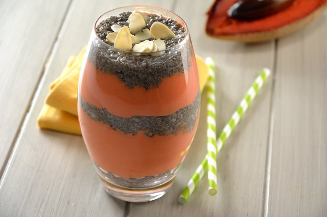

NSMOOTHIE DE MAMEY CON CHÍA
Prepara este saludable y rico smoothie de mamey con chía. Es perfecto para empezar las mañanas e ideal para días calurosos. Puedes preparar el pudin de chía un día antes y servirlo al día siguiente con el smoothie de mamey. La leche de almendra le da un sabor especial y el Yoghurt aporta un sabor delicioso.
Ingredientes
- 1 1/2 tazas de Yoghurt Estilo Griego
- 2 tazas de mamey
- 1 1/2 tazas de leche de almendra
- 1 taza de hielo
- 2 cucharadas de almendra
- 4 cucharadas de chia
- 1/2 taza de leche de almendra
- 1/4 de taza de azúcar
Preparacion
-
Licúa el mamey con la leche de almendra, el hielo y el Yoghurt.
-
Para el pudín de chía mezcla la chia junto con 1/2 taza de leche de almendra y el azúcar. Deja asentar por 10 minutos.
-
Coloca1/3 del pudin de chía y encima la mitad del smoothie de mamey, encima agrega un poco más del pudin y arriba coloca un el resto del smoothie. Termina con algunas almendras sin cáscara y tostadas encima.